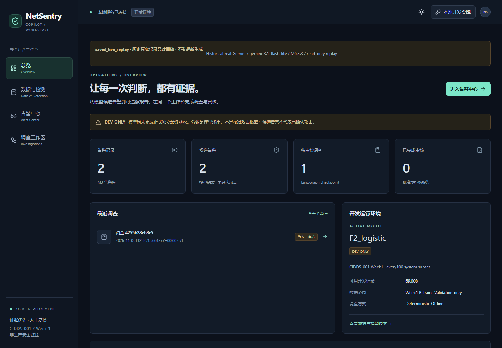
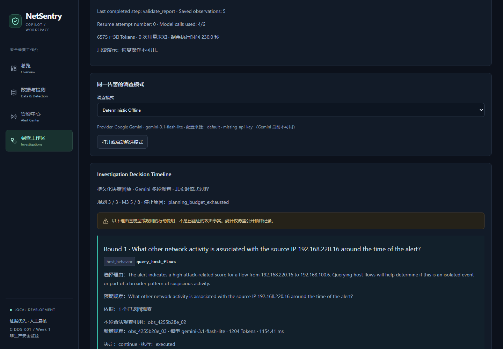
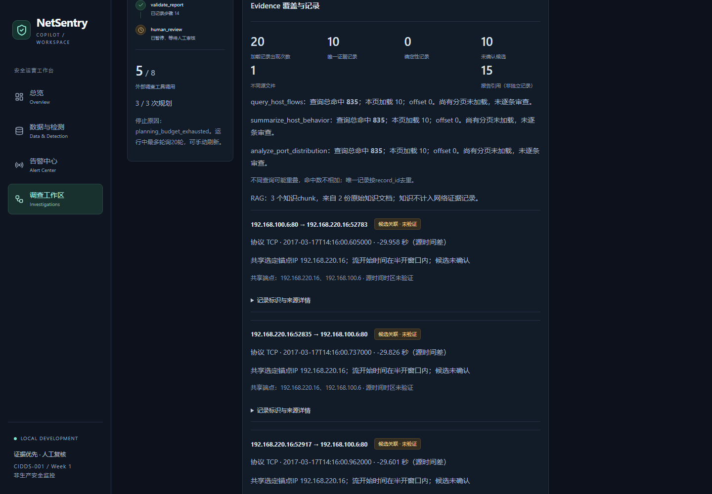
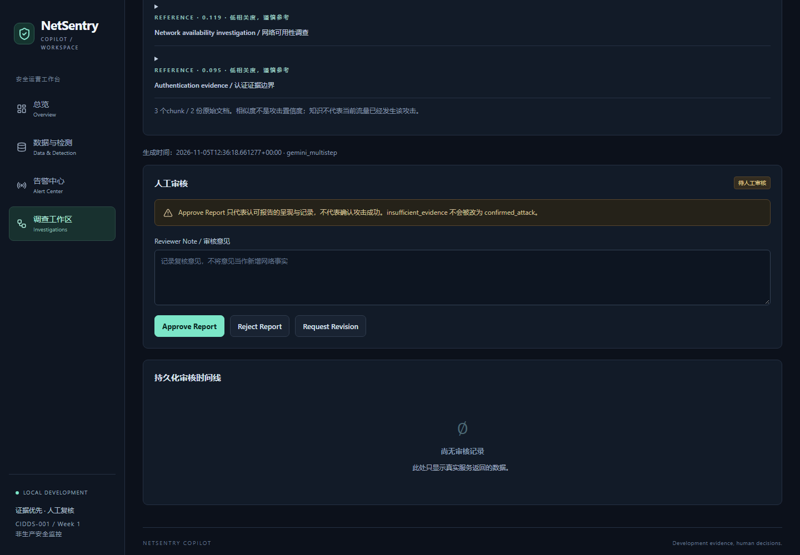

理解告警上下文
把模型结果与原始流量关联起来，让分析人员先看清涉及的主机、时间和通信关系。
01 / PROJECT OVERVIEW
NetSentry 将流量上下文、参考知识和人工审核连接起来，帮助分析人员沿着一条清晰的流程，完成告警初步研判。
AI产品经理项目 · Gemini 3.1 · Codex辅助实现

02 / USER PROBLEM & DESIGN GOALS
把模型结果与原始流量关联起来，让分析人员先看清涉及的主机、时间和通信关系。
根据已经得到的观察选择后续查询，将关联流量、主机行为和端口分布逐步组织起来。
在报告中呈现观察、来源与待补充的信息，把最终审核留给人，而不是只输出一段解释。
面向安全分析与复核角色的设计假设，尚未开展用户访谈。
03 / PRODUCT FLOW
查看预测结果
定位原始流量
Gemini选择工具
LangGraph管理流程
查询关联记录
补充安全知识
组织观察与来源
呈现需要补查的信息
核对报告内容
修订或作出审核决定
同一条记录贯穿流程模型预测与事件查询关联到同一份流量上下文。
工具返回实际数据固定查询接口提供流量结果，本地知识检索补充参考。
报告支持回查从观察进入具体来源，让复核人员了解结论依据。
04 / GEMINI 3.1 CASE
历史真实Gemini运行记录回放。模型根据上一轮返回的观察，继续选择下一步查询。
从告警对应的主机出发，查询邻近时间窗口内的流量，获得第一批上下文。
query_host_flows依据新返回的记录，汇总通信方向、对端与主机行为，进一步理解活动范围。
summarize_host_behavior利用主机摘要继续查看端口分布，把观察及其来源组织进调查报告。
analyze_port_distribution三轮后按预设规划预算结束调查并生成报告，进入待人工审核状态（pending_review）。

第一轮：围绕告警主机查找相关活动。点击图片查看原尺寸。
05 / MY ROLE & PRODUCT DECISIONS
我负责定义产品任务、迭代范围与验收要求，并围绕以下问题推进产品决策。编码、自动化测试和展示材料由Codex辅助完成。
将告警、调查、证据、报告和审核串联起来；选择具备端点元数据的公开样本，让模型输出能够回到具体流量。
约定工具与参数范围、规划预算和标签隔离，明确哪些信息可以进入调查上下文，哪些判断需要人工处理。
要求展示查询覆盖、记录来源和审核入口，并设计同输入的规则与LLM对照，分别观察流程、成本和报告质量。
06 / OUTCOMES & PROJECT SCOPE

在同一页面查看已加载的候选记录、查询范围与参考知识，支持后续复核。

保留报告、观察和来源，提供修订、批准与拒绝入口。当前案例仍待人工审核。